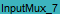
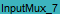
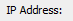
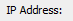

#This script assume that the Java GUI is already running.
#This script will select Mux tab and proceed to create an udp input mux
#Input: boardNum = [1..4]
#Input: portNum = [1..10]
#Input: muxAction = [delete create]
#Input: muxName = [InputMux001 .. InputMux100]
#Input: muxAddr = [x.x.x.x], muxPort = [xxxx]
#Input: portIncrement = 1/0, will enable when set
#Input: octetIncrement = 1/0, will enable when set
#Input: bulkNum = [1..20]
#Input: muxActiveCheck = If set, will check if input mux is active or not
#Usage: manage_input_mux.sikuli boardNum=4 portNum=7 muxAction=Create muxName=InputMux1 muxAddr=2xx.xxx.xx.x muxPort=xxxx muxActiveCheck=1
#Usage: manage_input_mux.sikuli muxAction=delete muxName=InputMux1
###############################################################
#common code for every sikuli code. Do not remove this section
from me7klib import *
###############################################################
#YOUR code start here
###############################################################
#This is your check for the inputs that you are expecting.
def Check_args():
#checking for required arguments
Check_arg('boardNum')
Check_arg('portNum')
Check_arg('muxName')
if not Get_arg('muxAction'):
Set_arg('muxAction', 'delete')
Print_debug('muxAction is not defined. Will use create as default.')
if Get_arg('muxAction').lower() == 'create':
Check_arg('muxAddr')
Check_arg('muxPort')
Check_args()
############################################################
#Main program definitions code start from this point
#Any global variables here
my_board = Get_arg('boardNum')
my_port = Get_arg('portNum')
eth_port = my_board.lower() + '/' + my_port.lower()
inputmuxNameDict = {
'InputMux001':, 'InputMux002':, 'InputMux003':, 'InputMux004': , 'InputMux005':,
'InputMux006':, 'InputMux007':, 'InputMux008':, 'InputMux009':, 'InputMux010':,
'InputMux_1':, 'InputMux_2':
, 'InputMux005':,
'InputMux006':, 'InputMux007':, 'InputMux008':, 'InputMux009':, 'InputMux010':,
'InputMux_1':, 'InputMux_2': , 'InputMux_3':
, 'InputMux_3': , 'InputMux_4':, 'InputMux_5':Pattern(
, 'InputMux_4':, 'InputMux_5':Pattern( ).exact(),
'InputMux_6':, 'InputMux_7':, 'InputMux_8':, 'InputMux_9':, 'InputMux_10':
).exact(),
'InputMux_6':, 'InputMux_7':, 'InputMux_8':, 'InputMux_9':, 'InputMux_10': }
#Any definitions are here
def Verify_Mux_Status():
pass
def Create_Input_Mux():
#first select the Mux tab and select the right port
Set_arg('tabName', 'Mux')
Set_arg('portClick', '2')
RunSikuli('nav_tabs')
#Now create the input mux
find(); click(Pattern().targetOffset(-34,1)); wait()
#Enter muxName
muxname = Get_arg('muxName')
find(); doubleClick(Pattern().targetOffset(80,0)); type(muxname)
#Enter multicast adress
muxaddr = Get_arg('muxAddr')
find(); doubleClick(Pattern().targetOffset(40,0)); type(muxaddr)
#Enter multicast port
muxport = Get_arg('muxPort')
find(); doubleClick(Pattern().targetOffset(40,0)); type(muxport)
if Get_arg('portIncrement'):
find(); click(Pattern().targetOffset(-40,0))
bulknum = Get_arg('bulkNum')
if bulknum: find(); doubleClick(Pattern().targetOffset(60,0)); type(bulknum)
if Get_arg('octetIncrement'):
find(); click(Pattern().targetOffset(-53,0))
bulknum = Get_arg('bulkNum')
if bulknum: find(); doubleClick(Pattern().targetOffset(60,0)); type(bulknum)
#Hit enter
find(); click(Pattern().targetOffset(-35,0))
if exists(): Capture_screen(); Exit_program('Error creating mux: ' + muxname, 1, 1)
if exists(): Capture_screen(); click(); click(Pattern().targetOffset(40,0)); Exit_program('Error creating mux: ' + muxname, 1)
Print_debug('Mux created successfully: ' + muxname)
def Delete_input_mux():
Nav_Port('double')
def Manage_input_mux():
my_action = Get_arg('muxAction')
if my_action.lower() == 'create':
Create_input_mux()
elif my_action.lower() == 'delete':
Delete_input_mux()
else:
Exit_program('Invalid muxAction entered: ' + my_action, 2)
#######################################################
#Main program flow
Nav_Port()
Create_Input_Mux()
}
#Any definitions are here
def Verify_Mux_Status():
pass
def Create_Input_Mux():
#first select the Mux tab and select the right port
Set_arg('tabName', 'Mux')
Set_arg('portClick', '2')
RunSikuli('nav_tabs')
#Now create the input mux
find(); click(Pattern().targetOffset(-34,1)); wait()
#Enter muxName
muxname = Get_arg('muxName')
find(); doubleClick(Pattern().targetOffset(80,0)); type(muxname)
#Enter multicast adress
muxaddr = Get_arg('muxAddr')
find(); doubleClick(Pattern().targetOffset(40,0)); type(muxaddr)
#Enter multicast port
muxport = Get_arg('muxPort')
find(); doubleClick(Pattern().targetOffset(40,0)); type(muxport)
if Get_arg('portIncrement'):
find(); click(Pattern().targetOffset(-40,0))
bulknum = Get_arg('bulkNum')
if bulknum: find(); doubleClick(Pattern().targetOffset(60,0)); type(bulknum)
if Get_arg('octetIncrement'):
find(); click(Pattern().targetOffset(-53,0))
bulknum = Get_arg('bulkNum')
if bulknum: find(); doubleClick(Pattern().targetOffset(60,0)); type(bulknum)
#Hit enter
find(); click(Pattern().targetOffset(-35,0))
if exists(): Capture_screen(); Exit_program('Error creating mux: ' + muxname, 1, 1)
if exists(): Capture_screen(); click(); click(Pattern().targetOffset(40,0)); Exit_program('Error creating mux: ' + muxname, 1)
Print_debug('Mux created successfully: ' + muxname)
def Delete_input_mux():
Nav_Port('double')
def Manage_input_mux():
my_action = Get_arg('muxAction')
if my_action.lower() == 'create':
Create_input_mux()
elif my_action.lower() == 'delete':
Delete_input_mux()
else:
Exit_program('Invalid muxAction entered: ' + my_action, 2)
#######################################################
#Main program flow
Nav_Port()
Create_Input_Mux()